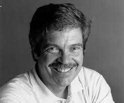

Inicio
Premios
Enlaces
Formulario
Enlaces que hablan sobre Alan Kay

Biografía detallada de Alan Kay
Entrevista a Alan Kay
Proyecto ordenador por 100$
Charla sobre dynabook con Alan Kay
Entrevista a Alan Kay en audio
Tu navegador no soporta audio .
Alan Kay sobre Dijkstra